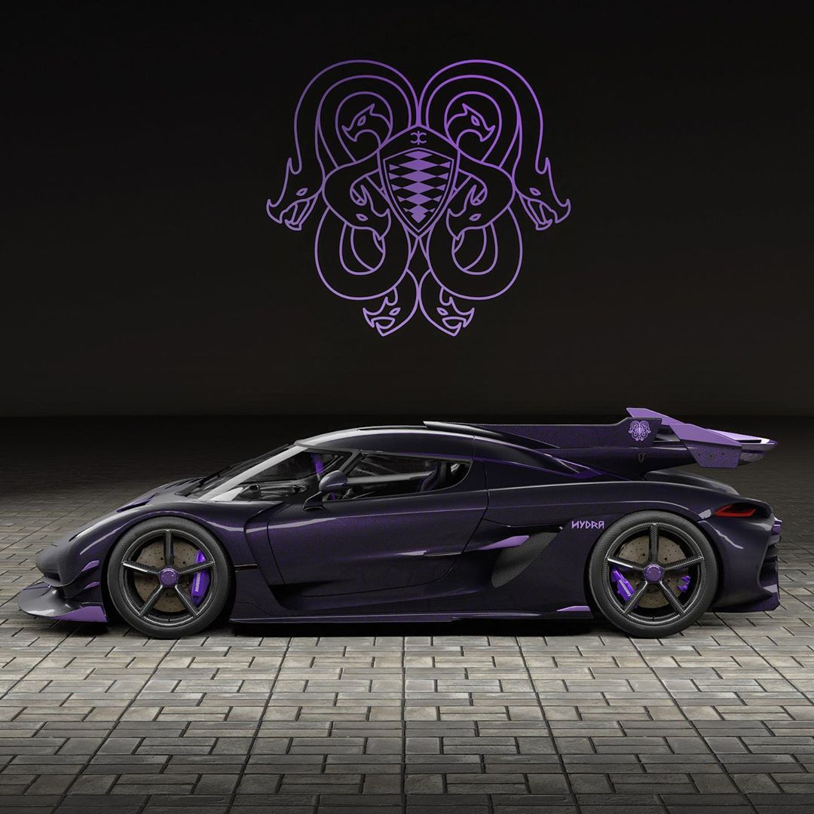
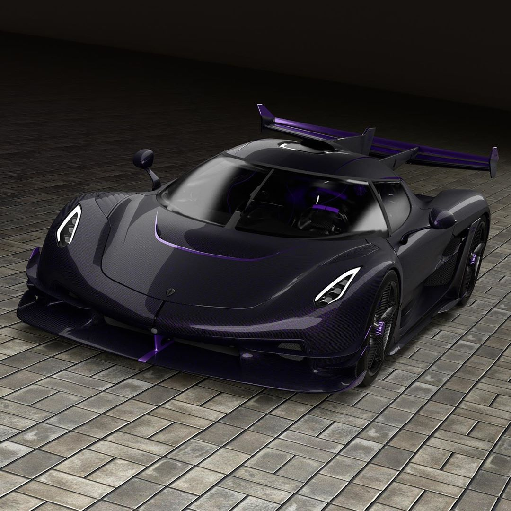
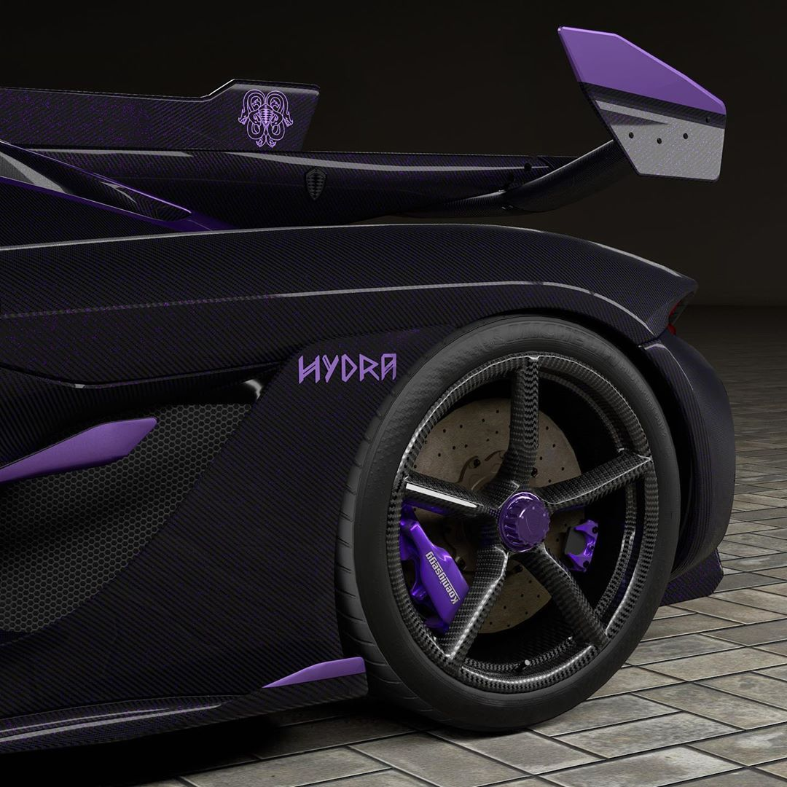
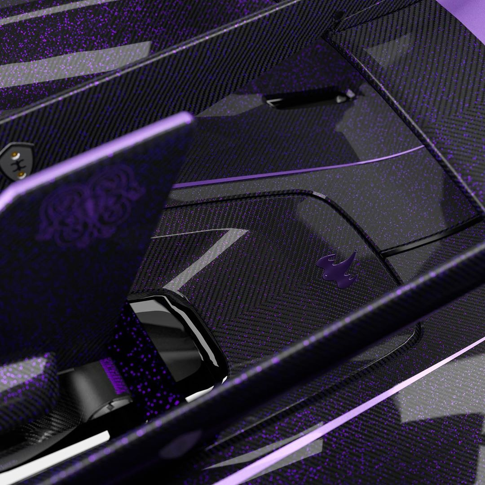
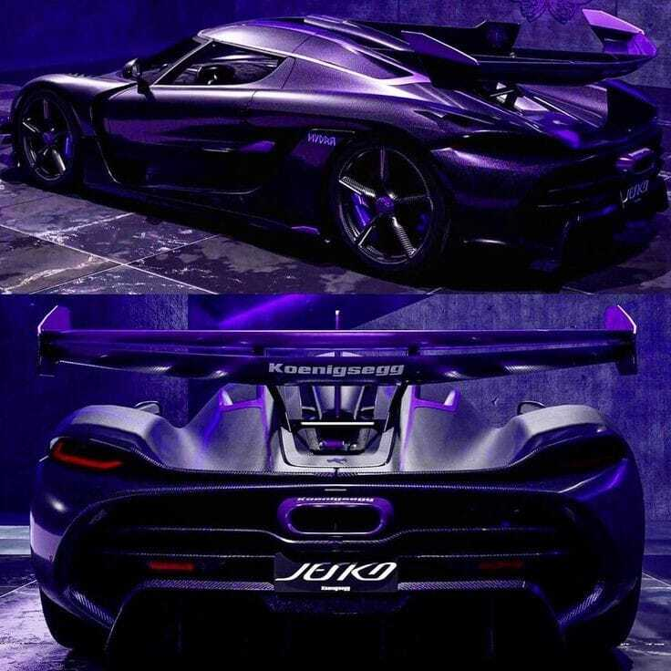
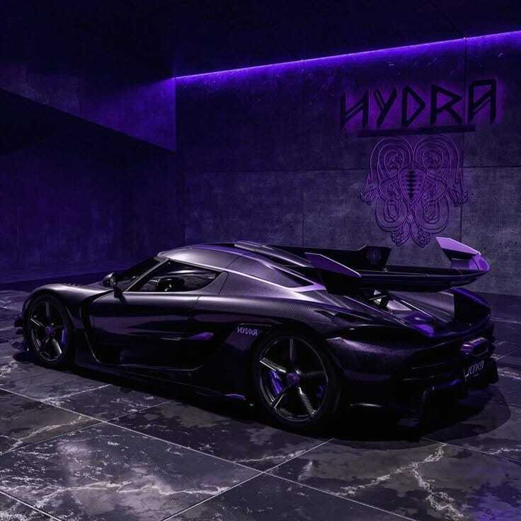
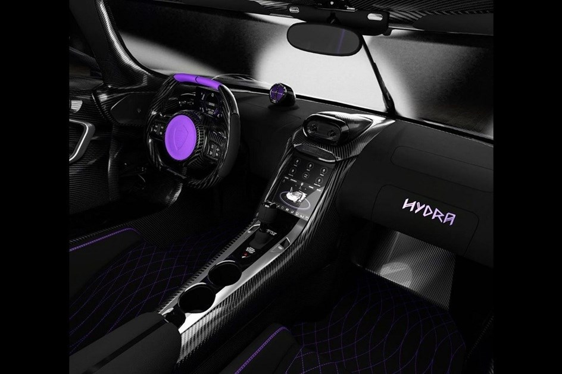

Uma página dedicada a um dos conceitos automotivos que mais me chamam atenção, com foco no design, desempenho e identidade do Hydra.
← Voltar aos projetos
Koenigsegg Jesko Hydra é um conceito do Jesko com uma produção produção única de 125 unidades. De imediato salta à vista a carroçaria em fibra de carbono forjado, polvilhada por flocos roxos, com as pinças de travão e a asa traseira pintadas na mesma cor e a personalização do Koenigsegg Jesko Hydra prossegue no habitáculo, com pormenores em violeta nas costuras, no forro do tejadilho e nos encostos da cabeça, sem esquecer o logotipo da marca no centro do volante. Destaca-se igualmente atrás a "barbatana de tubarão" em fibra de carbono, que liga o ‘aileron’ traseiro e o tejadilho, reforçando o ar selvagem do híper carro sueco. O Koenigsegg Jesko Hydra vai buscar o nome à Hidra de Lerna, criatura mitológica grega de nove cabeças que Hércules matou, em referência à transmissão de nove velocidades que o equipa. O motor é um 5,0 Litros Koenigsegg twin turbo alumínio V8. Possui quatro válvulas por cilindro, cada uma com furo e curso de 92 mm × 95,25 mm e uma taxa de compressão de 8,6:1. que gera 1 624 cv, com torques de 101 e 152 kgfm, respectivamente.
1.600+ cv
V8 5.0L De alumínio Twin-Turbo
9 velocidades
101 e 152 kgfm
474 KM/H
O motor é acoplado a uma transmissão de sete embreagens com nove velocidades, desenvolvida internamente com sistema "Light Speed Transmission" (LST) pelo fabricante. A nova transmissão possui 90 kg, sendo 50% menor em comprimento em relação a unidade de dupla embreagem com sete velocidades das versões anteriores. O sistema LST é capaz de trocar as marchas para cima e para baixo entre as marchas próximo à velocidade da luz, graças a abertura e ao fechamento simultâneo das embreagens, permitindo aceleração e desaceleração totalmente ininterruptas. A transmissão tem um tempo de mudança que varia de 20 a 30 milissegundos. Também possui um modo overdrive denominado "Ultimate Power on Demand" projetado para selecionar e engatar instantaneamente a engrenagem ideal para a aceleração máxima.





